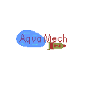

Games
Aquamech
This game was made with Godot in 4 days for a Game Jam called Fishfest with the Theme: Fish.
You were once a human but you find yourself inside the fishtank of your neighbor,
but equipped with a nerf machine gun and a rocket launcher,
can you survive until someone finds you there?